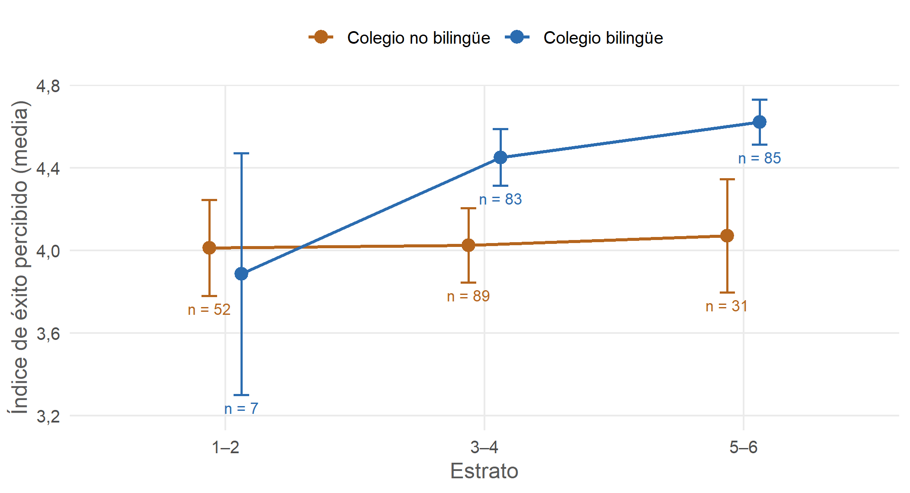
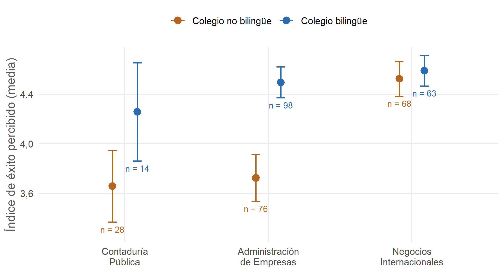

Capítulo 8 Modelos de regresión
Cuando las cuatro variables entran juntas en un mismo modelo, el panorama cambia: solo el colegio bilingüe sigue siendo significativo. El tipo de colegio, el estrato y la educación de los padres pierden su efecto porque comparten la mayor parte de lo que explican con el bilingüismo escolar. No es un problema técnico de colinealidad: todos los VIF están por debajo de 1,5.
| Predictor | M1 Demográficas | M2 + controles | M3 + nivel de inglés |
|---|---|---|---|
| Colegio público | -0,05 | -0,03 | -0,07 |
| Colegio bilingüe | 0,40*** | 0,43*** | 0,20** |
| Estrato (1–6) | 0,03 | 0,05 | -0,01 |
| Educación de los padres (1–5) | 0,07 | 0,05 | 0,01 |
| Negocios Internacionales (ref. AE) | 0,34*** | ||
| Contaduría Pública (ref. AE) | -0,05 | ||
| Masculino | -0,15† | ||
| Semestre | 0,06 | ||
| Nivel de inglés autopercibido (1–4) | 0,70*** | ||
| R² | 0,115 | 0,223 | 0,501 |
| N | 347 | 347 | 347 |
*** p < 0,001 · ** p < 0,01 · * p < 0,05 · † p < 0,10. Se excluye el caso de género “Otro”. AE = Administración de Empresas.
8.1 Prueba de sensibilidad
Por el efecto techo, el modelo M1 se repitió con una regresión logística ordinal, dividiendo el índice en tres niveles (bajo ≤ 3,6; medio; alto > 4,6). El resultado se mantiene: el colegio bilingüe multiplica por 2,47 las probabilidades de estar en un nivel más alto (IC 95 %: 1,58 a 3,87; p < 0,001), y las otras tres variables siguen sin ser significativas.
| Predictor | Razón de odds | IC 95 % | p |
|---|---|---|---|
| Colegio público | 0,99 | 0,55 a 1,78 | 0,971 |
| Colegio bilingüe | 2,47 | 1,58 a 3,87 | < 0,001 |
| Estrato (1–6) | 1,10 | 0,93 a 1,30 | 0,289 |
| Educación de los padres (1–5) | 1,18 | 0,95 a 1,46 | 0,126 |
Son resultados preliminares, pero se repiten en las tres especificaciones.
8.2 Interacciones: ¿la ventaja del colegio bilingüe es igual para todos?
Los modelos anteriores suponen que haber estudiado en un colegio bilingüe tiene el mismo efecto para todos los estudiantes. Desde el marco de equidad conviene revisar ese supuesto, porque una misma credencial escolar puede rendir distinto según el origen social del estudiante o el programa al que llega. Para examinarlo se añadieron al modelo M2, una por una, 10 interacciones elegidas por su sentido teórico. Las variables continuas (estrato, educación de los padres y nivel de inglés) se centraron en su media. Cada interacción se evaluó con una prueba de Wald con errores robustos (HC3), y los valores p se ajustaron con el método de Holm, ya que probar diez términos aumenta la probabilidad de encontrar alguno significativo por azar.
Estas interacciones no se plantearon como hipótesis antes de ver los datos. Por eso se presentan como un análisis exploratorio, cuyos resultados deberán confirmarse en otra muestra.
| Interacción | b | EE | F (gl) | p | p ajustado (Holm) | ΔR² |
|---|---|---|---|---|---|---|
| Colegio bilingüe × estrato | 0,178 | 0,057 | 9,79 (1, 337) | 0,002 | 0,017 | 0,021 |
| Colegio bilingüe × programa | — | — | 10,42 (2, 336) | < 0,001 | < 0,001 | 0,044 |
| Colegio bilingüe × colegio público | -0,552 | 0,280 | 3,90 (1, 337) | 0,049 | 0,343 | 0,013 |
| Colegio bilingüe × educación de los padres | 0,084 | 0,090 | 0,86 (1, 337) | 0,354 | 1,000 | 0,003 |
| Colegio bilingüe × género | 0,220 | 0,163 | 1,82 (1, 337) | 0,179 | 1,000 | 0,005 |
| Colegio público × estrato | -0,203 | 0,081 | 6,29 (1, 337) | 0,013 | 0,101 | 0,015 |
| Estrato × educación de los padres | 0,028 | 0,029 | 0,95 (1, 337) | 0,330 | 1,000 | 0,003 |
| Nivel de inglés × colegio bilingüe | -0,085 | 0,093 | 0,83 (1, 336) | 0,364 | 1,000 | 0,001 |
| Nivel de inglés × estrato | -0,011 | 0,034 | 0,11 (1, 336) | 0,741 | 1,000 | 0,000 |
| Nivel de inglés × colegio público | 0,028 | 0,120 | 0,05 (1, 336) | 0,818 | 1,000 | 0,000 |
ΔR² = aumento de la varianza explicada respecto al modelo sin la interacción. La interacción con el programa tiene dos grados de libertad porque compara tres programas, así que no tiene un único coeficiente.
Dos interacciones se mantienen después del ajuste: la del colegio bilingüe con el estrato (p ajustado = 0,017) y la del colegio bilingüe con el programa (p ajustado < 0,001). La interacción entre colegio público y estrato tenía un p de 0,013, pero no resiste la corrección. La del colegio bilingüe con el colegio público tampoco, y además se apoya en solo 12 estudiantes de colegio público bilingüe. Ninguna interacción con el nivel de inglés se acerca a la significancia.
8.2.1 Según el estrato

Figura 8.1: Índice de éxito percibido según colegio bilingüe y estrato (media e intervalo de confianza del 95 %). Debajo de cada barra, el número de estudiantes.
| Estrato | Efecto del colegio bilingüe | IC 95 % | p | Estudiantes bilingües / no bilingües |
|---|---|---|---|---|
| 1–2 | -0,01 | -0,35 a 0,32 | 0,951 | 7 / 52 |
| 3–4 | 0,35 | 0,17 a 0,53 | < 0,001 | 83 / 89 |
| 5–6 | 0,70 | 0,47 a 0,93 | < 0,001 | 85 / 31 |
Entre los estudiantes que no estudiaron en colegio bilingüe, el índice es prácticamente igual en todos los estratos: la media va de 4,01 en los estratos 1 y 2 a 4,07 en los estratos 5 y 6. Entre quienes sí estudiaron en uno, el índice sube con el estrato, de 3,89 a 4,45 y luego a 4,62. En consecuencia, la ventaja asociada al colegio bilingüe es de 0,35 puntos en los estratos 3 y 4 y se duplica en los estratos 5 y 6 (0,70 puntos).
Una lectura posible es que la etiqueta “colegio bilingüe” reúne ofertas muy diferentes. En los colegios de mayor costo suele haber más horas en inglés, docentes con mayor dominio del idioma y certificaciones internacionales; en otros, el programa bilingüe puede ser más limitado. La encuesta no pregunta por el tipo ni por la intensidad del programa bilingüe, así que esta explicación no puede comprobarse con estos datos. Aun así, el patrón es relevante para el marco de equidad: el beneficio de la escolaridad bilingüe se concentra en los estudiantes que ya contaban con más recursos, un patrón de acumulación de ventajas.
En los estratos 1 y 2 la estimación no permite concluir nada, porque solo 7 de esos estudiantes estudiaron en colegio bilingüe. La conclusión que sí se sostiene es la diferencia entre los estratos medios y los altos.
| Prueba | b | p |
|---|---|---|
| Modelo principal (estrato de 1 a 6) | 0,178 | 0,002 |
| Junto con la interacción por programa | 0,142 | 0,028 |
| Regresión logística ordinal (índice en tres niveles) | 0,512 | 0,002 |
| Sin los 7 estudiantes bilingües de estratos 1 y 2 | 0,167 | 0,007 |
| Sin los 19 casos más influyentes (distancia de Cook > 4/n) | 0,166 | 0,001 |
| Estrato agrupado en tres categorías (1–2, 3–4, 5–6) | — | 0,083 |
La interacción se mantiene con una regresión ordinal, sin los estudiantes bilingües de los estratos más bajos, sin los casos más influyentes y al estimarla junto con la interacción por programa. Solo se debilita cuando el estrato se agrupa en tres categorías (p = 0,083), lo que es esperable porque esa versión pierde la información de los seis niveles y descansa en el grupo pequeño de los estratos 1 y 2.
8.2.2 Según el programa

Figura 8.2: Índice de éxito percibido según colegio bilingüe y programa (media e intervalo de confianza del 95 %). Debajo de cada barra, el número de estudiantes.
| Programa | Efecto del colegio bilingüe | IC 95 % | p | Valor central: no bilingüe / bilingüe | Estudiantes bilingües / no bilingües |
|---|---|---|---|---|---|
| Administración de Empresas | 0,74 | 0,49 a 0,99 | < 0,001 | 3,8 / 4,8 | 98 / 76 |
| Negocios Internacionales | 0,04 | -0,16 a 0,24 | 0,687 | 4,8 / 4,8 | 63 / 68 |
| Contaduría Pública | 0,49 | -0,03 a 1,00 | 0,065 | 3,7 / 4,4 | 14 / 28 |
“Valor central” es el puntaje que separa a la mitad inferior de la superior de cada grupo (la mediana).
En Administración de Empresas está la brecha más grande: el colegio bilingüe se asocia con 0,74 puntos más en el índice, y el valor central pasa de 3,8 a 4,8. En Contaduría Pública la diferencia va en la misma dirección (0,49 puntos), pero no alcanza la significancia (p = 0,065), probablemente porque solo 14 estudiantes de ese programa vienen de colegio bilingüe. En Negocios Internacionales la diferencia desaparece (0,04 puntos, p = 0,687): en ese programa, más de la mitad de los estudiantes de ambos grupos tiene un índice de 4,8 o más.
Con estos datos no es posible saber por qué Negocios Internacionales borra la diferencia. Puede tratarse de selección, si quienes eligen ese programa ya tienen una relación más estrecha con el inglés aunque no hayan estudiado en un colegio bilingüe. También puede deberse al diseño del programa, si ofrece más asignaturas en inglés y con ello más práctica desde los primeros semestres. Para la institución, el resultado señala dónde se concentra la desventaja: en Administración de Empresas, y posiblemente en Contaduría Pública, los estudiantes que no vienen de colegio bilingüe son los que más se beneficiarían de apoyos lingüísticos en las asignaturas dictadas en inglés.
8.2.3 Modelo con las dos interacciones
| Predictor | b | EE | p |
|---|---|---|---|
| Colegio público | -0,087 | 0,123 | 0,479 |
| Colegio bilingüe | 0,671 | 0,135 | < 0,001 |
| Estrato (centrado) | -0,020 | 0,045 | 0,658 |
| Educación de los padres (centrada) | 0,047 | 0,045 | 0,296 |
| Negocios Internacionales (ref. AE) | 0,660 | 0,139 | < 0,001 |
| Contaduría Pública (ref. AE) | -0,004 | 0,199 | 0,982 |
| Masculino | -0,160 | 0,084 | 0,057 |
| Semestre | 0,070 | 0,044 | 0,119 |
| Colegio bilingüe × estrato | 0,142 | 0,064 | 0,028 |
| Colegio bilingüe × Negocios Internacionales | -0,612 | 0,166 | < 0,001 |
| Colegio bilingüe × Contaduría Pública | -0,057 | 0,306 | 0,853 |
| R² | 0,278 | ||
| N | 347 |
Las dos interacciones, en conjunto, son significativas (F(3, 335) = 10,13, p < 0,001) y elevan la varianza explicada de 0,223 a 0,278. Con las interacciones en el modelo, el coeficiente del colegio bilingüe (0,67) ya no es un efecto promedio: corresponde a un estudiante de Administración de Empresas con el estrato medio de la muestra. El coeficiente de Negocios Internacionales (0,66) indica que, entre quienes no estudiaron en colegio bilingüe, los de ese programa puntúan bastante más alto que los de Administración.
8.2.4 La relación entre el inglés y el éxito es la misma en todos los grupos
La pendiente del nivel de inglés autopercibido es de 0,70 entre quienes no estudiaron en colegio bilingüe y de 0,62 entre quienes sí, una diferencia que no es significativa (p = 0,364). Tampoco cambia con el estrato ni con el tipo de colegio. Sentirse más competente en inglés se asocia con más éxito percibido en la misma medida para todos los grupos. Las diferencias de origen, por tanto, operan sobre el punto de partida (cuánto inglés trae el estudiante y qué tan bien le rinde su colegio bilingüe) y no sobre cuánto le aporta ese inglés una vez en la universidad.
8.2.5 Alcance de estos resultados
Las dos interacciones son consistentes y resisten varias pruebas de robustez, pero tienen tres limitaciones que deben declararse en el artículo. Surgieron de un análisis exploratorio y no de hipótesis previas. Algunas celdas son pequeñas, en particular los estudiantes bilingües de los estratos 1 y 2 y los de Contaduría Pública. Y, como el resto del estudio, se basan en autopercepciones de estudiantes que ya están en los últimos semestres. Una nueva cohorte, con información sobre el tipo de programa bilingüe de cada colegio, permitiría poner a prueba las explicaciones propuestas aquí.
8.2.6 Texto sugerido para el artículo
Para examinar si la asociación entre la escolaridad bilingüe y el éxito percibido variaba según otras condiciones de origen, se añadieron al modelo con controles, de forma separada, diez términos de interacción. Las variables continuas se centraron en su media, se usaron errores estándar robustos (HC3) y los valores p se corrigieron por comparaciones múltiples con el método de Holm. Dos interacciones resultaron significativas tras la corrección. La primera, entre colegio bilingüe y estrato (b = 0,18, p ajustado = 0,017), indica que la ventaja asociada al colegio bilingüe aumenta con el estrato socioeconómico: fue de 0,35 puntos en los estratos 3 y 4 y de 0,70 en los estratos 5 y 6, mientras que en los estudiantes de colegio no bilingüe el índice no varió entre estratos. La segunda, entre colegio bilingüe y programa (F(2, 336) = 10,42, p ajustado < 0,001), muestra que la diferencia entre estudiantes de colegio bilingüe y no bilingüe se concentró en Administración de Empresas (0,74 puntos) y fue nula en Negocios Internacionales. Ambas interacciones elevaron la varianza explicada de 0,223 a 0,278. La relación entre el nivel de inglés autopercibido y el éxito percibido no varió entre grupos. Dado su carácter exploratorio y el tamaño reducido de algunas celdas, estos resultados deben confirmarse en muestras independientes.